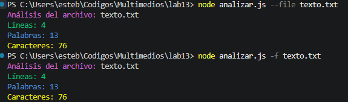

Este laboratorio consiste en un script NodeJS (analizar.js) que analiza archivos de texto y muestra el número de líneas, palabras y caracteres.

PS C:\Users\esteb\Codigos\Multimedios\lab13> node analizar.js --file texto.txt Análisis del archivo: texto.txt Líneas: 4 Palabras: 13 Caracteres: 76
Archivo de prueba: Descargar texto.txt